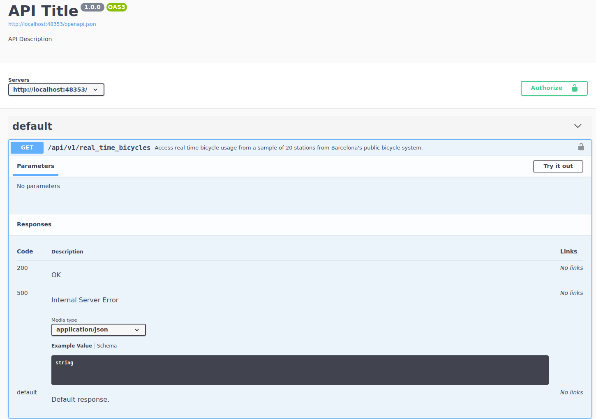
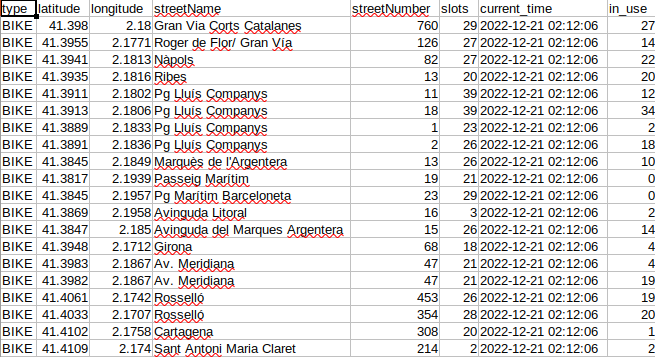
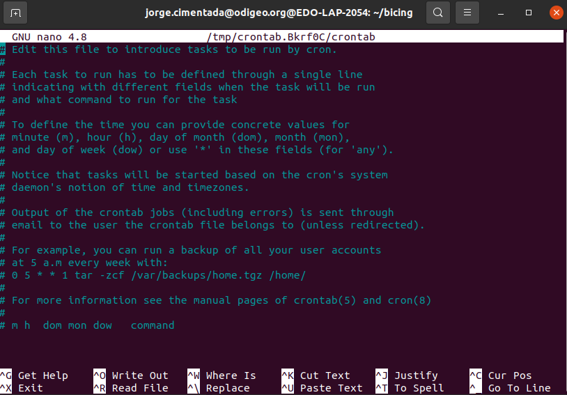

Automating API programs
Automating APIs
Ever wondered how you can grab real time data, on demand, without moving a finger?

Welcome to the world of automation!
Automating APIs
Automating APIs is actually not that special
It is the same type of work for automating any script: web scraping, APIs, bots
Here we focus on a real example as a way to motivate automation
Grabbing real time data from a real-looking API
Automating APIs
My story with bicycles:

The Bicing API
scrapexhas a near-real copy of the Bicing API. Access it with:
library(scrapex)
library(httr2)
library(dplyr)
library(readr)
bicing <- api_bicing()[1] "Visit your REST API at http://localhost:23892"
[1] "Documentation is at http://localhost:23892/__docs__/"The Bicing API
The first thing we want to check is the documentation:

The Bicing API
We want to check the single endpoint:

The Bicing API
Access real time bicycle usage from a sample of 20 stations from Barcelona’s public bicycle system
No parameters needed
I’ve only included 20 stations from the original results
Data changes per request
If we want to understand bicycle patterns, we need to automate this process and we need to save this data somewhere.
Talking to the bicing API
- Since no parameters are needed, we go make a request to the endpoint:
rt_bicing <- paste0(bicing$api_web, "/api/v1/real_time_bicycles")
resp_output <- rt_bicing %>%
request() %>%
req_perform()
resp_output<httr2_response>GET http://localhost:23892/api/v1/real_time_bicyclesStatus: 200 OKContent-Type: application/jsonBody: In memory (3312 bytes)Talking to the Bicing API
Output is JSON
Status code is 200
Small data (1 byte = 0.000001 mb)
sample_output <-
resp_output %>%
resp_body_json() %>%
head(n = 2)Talking to the Bicing API
sample_output[[1]]
[[1]]$type
[1] "BIKE"
[[1]]$latitude
[1] 41.398
[[1]]$longitude
[1] 2.18
[[1]]$streetName
[1] "Gran Via Corts Catalanes"
[[1]]$streetNumber
[1] "760"
[[1]]$slots
[1] 29
[[1]]$current_time
[1] "2023-01-26 18:02:16"
[[1]]$in_use
[1] 6
[[2]]
[[2]]$type
[1] "BIKE"
[[2]]$latitude
[1] 41.3955
[[2]]$longitude
[1] 2.1771
[[2]]$streetName
[1] "Roger de Flor/ Gran Vía"
[[2]]$streetNumber
[1] "126"
[[2]]$slots
[1] 27
[[2]]$current_time
[1] "2023-01-26 18:02:16"
[[2]]$in_use
[1] 15Talking to the Bicing API
Output looks like each slot is the row of a data frame where each contains a column, with names like
slots,in_use,latitude/longitudeandstreetNameLoop over each slot and simply try to convert it to a data frame
Each slot has a named list inside,
data.framecan convert that directly to a data frameBind all those rows into a single data frame
Talking to the Bicing API
sample_output %>%
lapply(data.frame) %>%
bind_rows() type latitude longitude streetName streetNumber slots
1 BIKE 41.3980 2.1800 Gran Via Corts Catalanes 760 29
2 BIKE 41.3955 2.1771 Roger de Flor/ Gran Vía 126 27
current_time in_use
1 2023-01-26 18:02:16 6
2 2023-01-26 18:02:16 15Works well 👏!
Talking to the Bicing API
Let’s scale it to entire response:
all_stations <-
resp_output %>%
resp_body_json()
all_stations_df <-
all_stations %>%
lapply(data.frame) %>%
bind_rows()
all_stations_df type latitude longitude streetName streetNumber slots
1 BIKE 41.3980 2.1800 Gran Via Corts Catalanes 760 29
2 BIKE 41.3955 2.1771 Roger de Flor/ Gran Vía 126 27
3 BIKE 41.3941 2.1813 Nàpols 82 27
4 BIKE 41.3935 2.1816 Ribes 13 20
5 BIKE 41.3911 2.1802 Pg Lluís Companys 11 39
6 BIKE 41.3913 2.1806 Pg Lluís Companys 18 39
7 BIKE 41.3889 2.1833 Pg Lluís Companys 1 23
8 BIKE 41.3891 2.1836 Pg Lluís Companys 2 26
9 BIKE 41.3845 2.1849 Marquès de l'Argentera 13 26
10 BIKE 41.3817 2.1939 Passeig Marítim 19 21
11 BIKE 41.3845 2.1957 Pg Marítim Barceloneta 23 29
12 BIKE 41.3869 2.1958 Avinguda Litoral 16 3
13 BIKE 41.3847 2.1850 Avinguda del Marques Argentera 15 26
14 BIKE 41.3948 2.1712 Girona 68 18
15 BIKE 41.3983 2.1867 Av. Meridiana 47 21
16 BIKE 41.3982 2.1867 Av. Meridiana 47 21
17 BIKE 41.4061 2.1742 Rosselló 453 26
18 BIKE 41.4033 2.1707 Rosselló 354 28
19 BIKE 41.4102 2.1758 Cartagena 308 20
20 BIKE 41.4109 2.1740 Sant Antoni Maria Claret 214 2
current_time in_use
1 2023-01-26 18:02:16 6
2 2023-01-26 18:02:16 15
3 2023-01-26 18:02:16 1
4 2023-01-26 18:02:16 19
5 2023-01-26 18:02:16 37
6 2023-01-26 18:02:16 25
7 2023-01-26 18:02:16 8
8 2023-01-26 18:02:16 16
9 2023-01-26 18:02:16 11
10 2023-01-26 18:02:16 12
11 2023-01-26 18:02:16 29
12 2023-01-26 18:02:16 2
13 2023-01-26 18:02:16 10
14 2023-01-26 18:02:16 2
15 2023-01-26 18:02:16 3
16 2023-01-26 18:02:16 0
17 2023-01-26 18:02:16 13
18 2023-01-26 18:02:16 20
19 2023-01-26 18:02:16 3
20 2023-01-26 18:02:16 2Talking to the Bicing API
Our strategy should also be to wrap everything in a function:
real_time_bicing <- function(bicing_api) {
rt_bicing <- paste0(bicing_api$api_web, "/api/v1/real_time_bicycles")
resp_output <-
rt_bicing %>%
request() %>%
req_perform()
all_stations <-
resp_output %>%
resp_body_json()
all_stations_df <-
all_stations %>%
lapply(data.frame) %>%
bind_rows()
all_stations_df
}Talking to the Bicing API
Receives the bicing API object that has the API website
Makes a request to the API
Combines all results into a data frame and returns the data frame.
Using this example function we can confirm that making two requests will return different data in terms of bicycle usage.
Talking to the Bicing API
first <- real_time_bicing(bicing) %>% select(in_use) %>% rename(first_in_use = in_use)
second <- real_time_bicing(bicing) %>% select(in_use) %>% rename(second_in_use = in_use)
bind_cols(first, second) first_in_use second_in_use
1 3 18
2 17 21
3 21 3
4 14 6
5 31 33
6 20 34
7 14 10
8 20 0
9 23 5
10 15 15
11 6 2
12 1 2
13 24 20
14 12 3
15 16 8
16 7 10
17 3 26
18 8 17
19 17 19
20 2 1Saving data in API programs
For saving data we need to focus on several things:
We must perform the request to the bicing API
We must specify a local path where the CSV file will be saved. If the directory of the CSV file has not been created, we should create it.
If the CSV file does not exist, then we should create it from scratch
If the CSV file exists, then we want to append the result
Saving data in API programs
You’ll see that in the remaining part of this chapter I’ll use my local path to save the CSV file. This is in the variable local_csv. You should replace this with your local path before running any of the R code below.
Saving data in API programs
save_bicing_data <- function(bicing_api) {
# Perform a request to the bicing API and get the data frame back
bicing_results <- real_time_bicing(bicing_api)
# Specify the local path where the file will be saved
local_csv <- "/home/jorge.cimentada/bicing/bicing_history.csv"
# Extract the directory where the local file is saved
main_dir <- dirname(local_csv)
# If the directory does *not* exist, create it, recursively creating each folder
if (!dir.exists(main_dir)) {
dir.create(main_dir, recursive = TRUE)
}
# If the file does not exist, save the current bicing response
if (!file.exists(local_csv)) {
write_csv(bicing_results, local_csv)
} else {
# If the file does exist, the *append* the result to the already existing CSV file
write_csv(bicing_results, local_csv, append = TRUE)
}
}Saving data in API programs
One way to test whether this works is to run this twice and read the results back to a data frame to check that the data frame is correctly structured:
save_bicing_data(bicing)
Sys.sleep(5)
save_bicing_data(bicing)
bicing_history <- read_csv("/home/jorge.cimentada/bicing/bicing_history.csv")
bicing_history %>%
distinct(current_time)## # A tibble: 2 × 1
## current_time
## <dttm>
## 1 2022-12-20 23:51:56
## 2 2022-12-20 23:52:04Saving data in API programs
In addition, we should also have two different numbers in the column in_use for the number of bicycles under usage. Let’s pick one station to check that it works:
bicing_history %>%
filter(streetName == "Ribes") %>%
select(current_time, streetName, in_use)## # A tibble: 2 × 3
## current_time streetName in_use
## <dttm> <chr> <dbl>
## 1 2022-12-20 23:51:56 Ribes 13
## 2 2022-12-20 23:52:04 Ribes 19Automating the program
Here’s when the fun part begins.
- We create a script that defines the functions we’ll use for the program.
- Run the functions at the end of that script.
- Automate the process using
cronby running the script in a schedule.
Automating the program
Here’s what we have:
library(scrapex)
library(httr2)
library(dplyr)
library(readr)
bicing <- api_bicing()
real_time_bicing <- function(bicing_api) {
rt_bicing <- paste0(bicing_api$api_web, "/api/v1/real_time_bicycles")
resp_output <-
rt_bicing %>%
request() %>%
req_perform()
all_stations <-
resp_output %>%
resp_body_json()
all_stations_df <-
all_stations %>%
lapply(data.frame) %>%
bind_rows()
all_stations_df
}
save_bicing_data <- function(bicing_api) {
# Perform a request to the bicing API and get the data frame back
bicing_results <- real_time_bicing(bicing_api)
# Specify the local path where the file will be saved
local_csv <- "/home/jorge.cimentada/bicing/bicing_history.csv"
# Extract the directory where the local file is saved
main_dir <- dirname(local_csv)
# If the directory does *not* exist, create it, recursively creating each folder
if (!dir.exists(main_dir)) {
dir.create(main_dir, recursive = TRUE)
}
# If the file does not exist, save the current bicing response
if (!file.exists(local_csv)) {
write_csv(bicing_results, local_csv)
} else {
# If the file does exist, the *append* the result to the already existing CSV file
write_csv(bicing_results, local_csv, append = TRUE)
}
}
save_bicing_data(bicing)Automating the program
- Save that script in a newly create folder. I did that in
~/bicing/

Automating the program
- Test it first:

Automating the program
If it works:

Automating the program

Automating the program
Let’s set the schedule:
- Open cron with
crontab -e - Define command to run:
* * * * * Rscript /home/jorge.cimentada/bicing/api_bicing.R - Paste it into the
crontab - Exit
cronHit CTRL and X (this is for exiting the cron interface)
It will prompt you to save the file. Press Y to save it.
Press enter to save the cron schedule file with the same name it has.
Automating the program

Automating the program

Automating the program
Exit cron and wait a few minutes…⏲️
Automating the program

Summary
Real time data often needs frequent requests
cronis your friend for thatSaving data on each request is paramount (could by database or locally)
Automation can take you a long way!